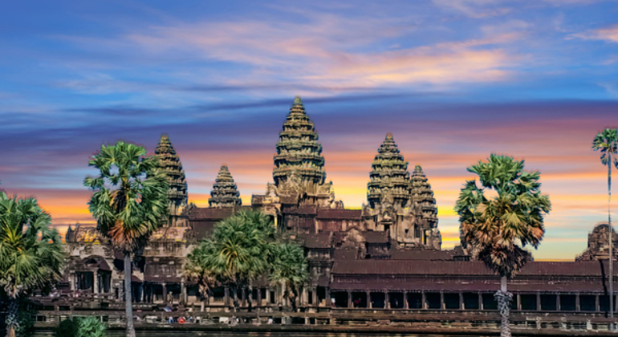
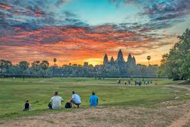
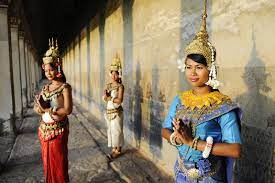
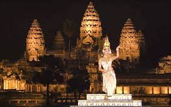
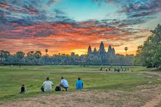
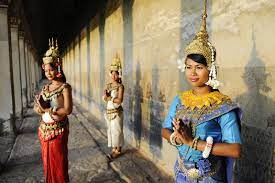
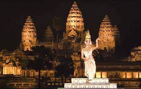
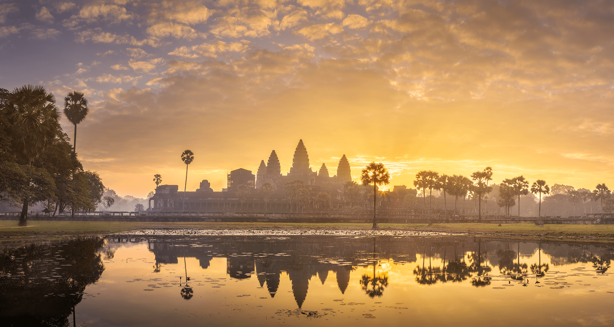
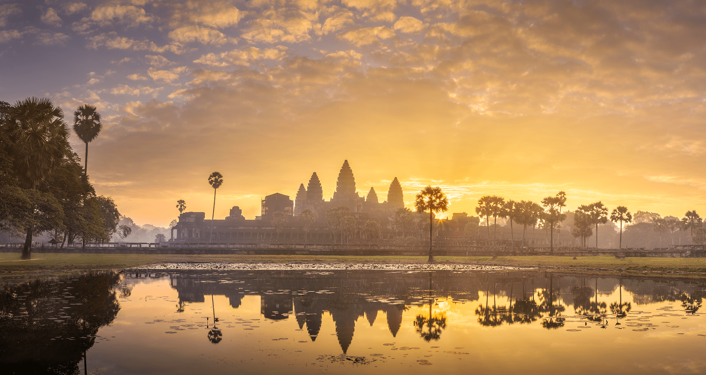

Angkor Wat, nestled amidst the lush jungles of Cambodia, stands as a testament to the grandeur of the Khmer Empire. This colossal temple complex, built in the early 12th century by King Suryavarman II, is a masterpiece of Khmer architecture and Hindu-Buddhist cosmology. Its iconic silhouette, with its five towers symbolizing Mount Meru, the abode of the gods, has become synonymous with Cambodian identity. Angkor Wat's intricate bas-reliefs, depicting epic Hindu myths and scenes from daily life, mesmerize visitors with their artistic finesse and historical significance. As the largest religious monument in the world, Angkor Wat continues to inspire awe and wonder, inviting travelers to unravel its mysteries and delve into the rich tapestry of Southeast Asian history and culture.
 





 
